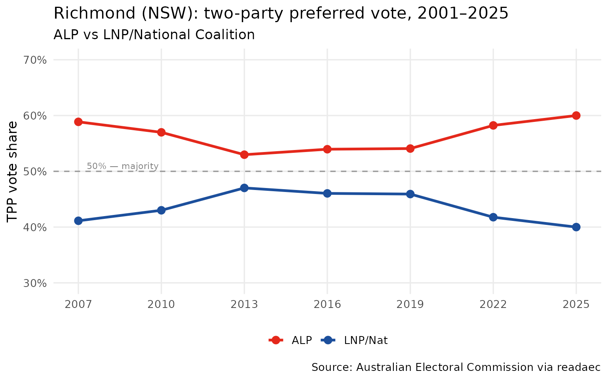
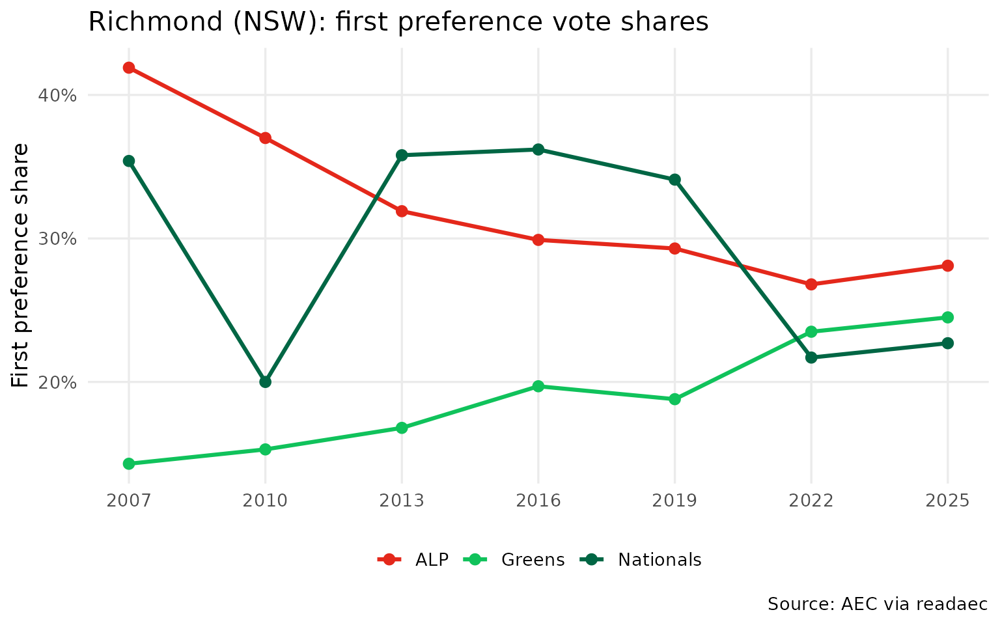
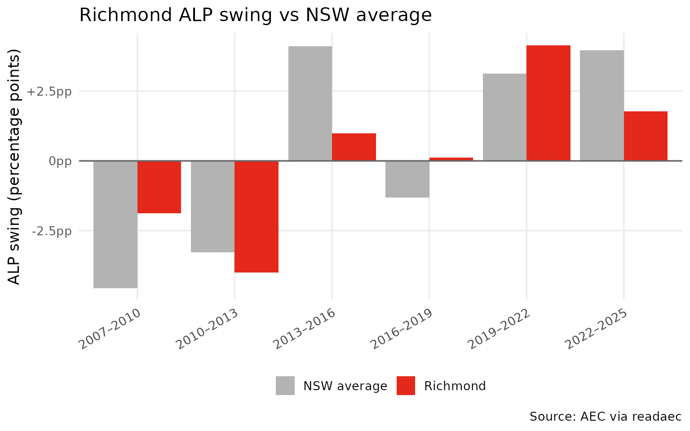

Case study: Richmond electorate (2001–2025)
Source:vignettes/richmond-example.Rmd
richmond-example.RmdRichmond is a federal electorate in northern New South Wales, covering the Northern Rivers region including Ballina, Lismore, Byron Bay, and Tweed Heads. Historically a Labor–National marginal, it has been contested by the Nationals, Labor, and (more recently) teal/independent candidates.
This vignette walks through a complete single-electorate analysis using readaec.
1. Available elections
Start by confirming which elections we have data for.
list_elections()
#> year event_id date type has_downloads
#> 1 2001 10822 2001-11-10 general FALSE
#> 2 2004 12246 2004-10-09 general FALSE
#> 3 2007 13745 2007-11-24 general TRUE
#> 4 2010 15508 2010-08-21 general TRUE
#> 5 2013 17496 2013-09-07 general TRUE
#> 6 2016 20499 2016-07-02 double_dissolution TRUE
#> 7 2019 24310 2019-05-18 general TRUE
#> 8 2022 27966 2022-05-21 general TRUE
#> 9 2025 31496 2025-05-03 general TRUE2. Two-party preferred trend
Pull the TPP result for Richmond in every election since 2001. The
get_tpp() function returns one row per division; we filter
to Richmond and stack the years.
# AEC CSV downloads are available from 2007 onwards
years <- list_elections()$year[list_elections()$has_downloads]
tpp_richmond <- map_dfr(years, function(yr) {
get_tpp(yr) |>
filter(tolower(division) == "richmond") |>
select(division, division_id, state, alp_pct, lnp_pct, total_votes, year)
})
tpp_richmond
#> # A tibble: 7 × 7
#> division division_id state alp_pct lnp_pct total_votes year
#> <chr> <dbl> <chr> <dbl> <dbl> <dbl> <dbl>
#> 1 Richmond 145 NSW 58.9 41.1 81486 2007
#> 2 Richmond 145 NSW 57.0 43.0 80835 2010
#> 3 Richmond 145 NSW 53.0 47.0 85278 2013
#> 4 Richmond 145 NSW 54.0 46.0 98398 2016
#> 5 Richmond 145 NSW 54.1 45.9 100320 2019
#> 6 Richmond 145 NSW 58.2 41.8 99784 2022
#> 7 Richmond 145 NSW 60 40 104952 2025
ggplot(tpp_richmond, aes(x = year)) +
geom_line(aes(y = alp_pct, colour = "ALP"), linewidth = 1.2) +
geom_point(aes(y = alp_pct, colour = "ALP"), size = 3) +
geom_line(aes(y = lnp_pct, colour = "LNP/Nat"), linewidth = 1.2) +
geom_point(aes(y = lnp_pct, colour = "LNP/Nat"), size = 3) +
geom_hline(yintercept = 50, linetype = "dashed", colour = "grey60") +
annotate("text", x = min(years) + 0.3, y = 51,
label = "50% — majority", size = 3, colour = "grey50", hjust = 0) +
scale_colour_manual(values = c("ALP" = "#E4281B", "LNP/Nat" = "#1C4F9C")) +
scale_x_continuous(breaks = years) +
scale_y_continuous(limits = c(30, 70),
labels = function(x) paste0(x, "%")) +
labs(
title = "Richmond (NSW): two-party preferred vote, 2001–2025",
subtitle = "ALP vs LNP/National Coalition",
x = NULL,
y = "TPP vote share",
colour = NULL,
caption = "Source: Australian Electoral Commission via readaec"
) +
theme_minimal(base_size = 13) +
theme(legend.position = "bottom",
panel.grid.minor = element_blank())
3. Who won each election?
get_members_elected() returns the elected member for
every division. We filter to Richmond to build a candidate-by-year
summary.
members_richmond <- map_dfr(years, function(yr) {
tryCatch(
get_members_elected(yr) |>
filter(tolower(divisionnm) == "richmond") |>
select(divisionnm, surname, givennm, partyab, stateab, year),
error = function(e) NULL
)
})
members_richmond |>
select(year, given_name = givennm, surname, party = partyab) |>
arrange(year)
#> # A tibble: 7 × 4
#> year given_name surname party
#> <dbl> <chr> <chr> <chr>
#> 1 2007 Justine ELLIOT ALP
#> 2 2010 Justine ELLIOT ALP
#> 3 2013 Justine ELLIOT ALP
#> 4 2016 Justine ELLIOT ALP
#> 5 2019 Justine ELLIOT ALP
#> 6 2022 Justine ELLIOT ALP
#> 7 2025 Justine ELLIOT ALP4. First preference vote breakdown
First preferences show how votes were distributed across all candidates before preferences were distributed. This reveals the full competitive landscape beyond just the two-party contest.
fp_richmond <- map_dfr(years, function(yr) {
get_fp(yr) |>
filter(tolower(division) == "richmond") |>
select(year, division, surname, given_name, party, party_name, total_votes)
})
# Total formal votes per year (for calculating shares)
fp_totals <- fp_richmond |>
group_by(year) |>
summarise(total_formal = sum(total_votes, na.rm = TRUE))
# Major party shares
fp_major <- fp_richmond |>
filter(party %in% c("ALP", "NAT", "NP", "LIB", "GRN")) |>
left_join(fp_totals, by = "year") |>
mutate(
pct = round(total_votes / total_formal * 100, 1),
party_label = case_when(
party %in% c("NAT", "NP") ~ "Nationals",
party == "ALP" ~ "ALP",
party == "LIB" ~ "Liberal",
party == "GRN" ~ "Greens",
TRUE ~ party
)
)
ggplot(fp_major, aes(x = year, y = pct, colour = party_label)) +
geom_line(linewidth = 1.1) +
geom_point(size = 2.5) +
scale_colour_manual(values = c(
"ALP" = "#E4281B",
"Nationals" = "#006644",
"Liberal" = "#1C4F9C",
"Greens" = "#10C25B"
)) +
scale_x_continuous(breaks = years) +
scale_y_continuous(labels = function(x) paste0(x, "%")) +
labs(
title = "Richmond (NSW): first preference vote shares",
x = NULL,
y = "First preference share",
colour = NULL,
caption = "Source: AEC via readaec"
) +
theme_minimal(base_size = 13) +
theme(legend.position = "bottom",
panel.grid.minor = element_blank())
5. How did Richmond swing relative to NSW?
Compare Richmond’s election-to-election swing against all other NSW divisions to see whether it moved with or against the state trend.
# Build consecutive election pairs from years with downloads
election_pairs <- Map(c, head(years, -1), tail(years, -1))
nsw_swings <- map_dfr(election_pairs, function(pair) {
get_swing(pair[1], pair[2], state = "NSW") |>
filter(!redistribution_flag) |>
mutate(period = paste0(pair[1], "–", pair[2]))
})
richmond_swing <- nsw_swings |>
filter(tolower(division) == "richmond") |>
select(period, division, alp_swing, year_from, year_to)
nsw_avg_swing <- nsw_swings |>
group_by(period, year_from, year_to) |>
summarise(avg_alp_swing = mean(alp_swing, na.rm = TRUE), .groups = "drop")
swing_comparison <- richmond_swing |>
left_join(nsw_avg_swing, by = c("period", "year_from", "year_to")) |>
mutate(relative_swing = alp_swing - avg_alp_swing)
swing_comparison |>
select(period, richmond_swing = alp_swing, nsw_avg = avg_alp_swing,
relative_swing)
#> # A tibble: 6 × 4
#> period richmond_swing nsw_avg relative_swing
#> <chr> <dbl> <dbl> <dbl>
#> 1 2007–2010 -1.88 -4.56 2.68
#> 2 2010–2013 -4.01 -3.27 -0.739
#> 3 2013–2016 0.98 4.11 -3.13
#> 4 2016–2019 0.12 -1.31 1.43
#> 5 2019–2022 4.15 3.14 1.01
#> 6 2022–2025 1.77 3.97 -2.20
swing_comparison |>
select(period, richmond_swing = alp_swing, nsw_avg = avg_alp_swing) |>
tidyr::pivot_longer(c(richmond_swing, nsw_avg),
names_to = "series", values_to = "swing") |>
mutate(series = if_else(series == "richmond_swing", "Richmond", "NSW average")) |>
ggplot(aes(x = period, y = swing, fill = series)) +
geom_col(position = "dodge") +
geom_hline(yintercept = 0, colour = "grey40") +
scale_fill_manual(values = c("Richmond" = "#E4281B", "NSW average" = "grey70")) +
scale_y_continuous(labels = function(x) paste0(ifelse(x > 0, "+", ""), x, "pp")) +
labs(
title = "Richmond ALP swing vs NSW average",
x = NULL,
y = "ALP swing (percentage points)",
fill = NULL,
caption = "Source: AEC via readaec"
) +
theme_minimal(base_size = 13) +
theme(legend.position = "bottom",
axis.text.x = element_text(angle = 30, hjust = 1),
panel.grid.minor = element_blank())
6. Enrolment and turnout over time
Is the electorate growing? Is turnout holding up?
turnout_richmond <- map_dfr(years, function(yr) {
get_turnout(yr) |>
filter(tolower(divisionnm) == "richmond") |>
select(divisionnm, year, everything())
})
turnout_richmond
#> # A tibble: 7 × 8
#> divisionnm year divisionid stateab enrolment turnout turnoutpercentage
#> <chr> <dbl> <dbl> <chr> <dbl> <dbl> <dbl>
#> 1 Richmond 2007 145 NSW 90103 85133 94.5
#> 2 Richmond 2010 145 NSW 92391 85587 92.6
#> 3 Richmond 2013 145 NSW 97421 89681 92.1
#> 4 Richmond 2016 145 NSW 112715 102146 90.6
#> 5 Richmond 2019 145 NSW 119332 108381 90.8
#> 6 Richmond 2022 145 NSW 118638 107208 90.4
#> 7 Richmond 2025 145 NSW 126814 113552 89.5
#> # ℹ 1 more variable: turnoutswing <dbl>
enrolment_richmond <- map_dfr(years, function(yr) {
get_enrolment(yr) |>
filter(tolower(divisionnm) == "richmond") |>
select(divisionnm, year, everything())
})
enrolment_richmond
#> # A tibble: 7 × 12
#> divisionnm year divisionid stateab closeofrollsenrolment
#> <chr> <dbl> <dbl> <chr> <dbl>
#> 1 Richmond 2007 145 NSW 90018
#> 2 Richmond 2010 145 NSW 92384
#> 3 Richmond 2013 145 NSW 97338
#> 4 Richmond 2016 145 NSW 112820
#> 5 Richmond 2019 145 NSW 119446
#> 6 Richmond 2022 145 NSW 118652
#> 7 Richmond 2025 145 NSW 126908
#> # ℹ 7 more variables: notebookrolladditions <dbl>, notebookrolldeletions <dbl>,
#> # reinstatementspostal <dbl>, reinstatementsprepoll <dbl>,
#> # reinstatementsabsent <dbl>, reinstatementsprovisional <dbl>,
#> # enrolment <dbl>Summary
This case study shows how a few lines of readaec code can reconstruct the full electoral history of any Australian federal division:
| Function | What it gives you |
|---|---|
get_tpp(year) |
ALP vs LNP two-party preferred by division |
get_fp(year) |
First preferences by candidate |
get_members_elected(year) |
Who won each seat |
get_swing(from, to) |
Election-to-election TPP change |
get_enrolment(year) |
Enrolled voters by division |
get_turnout(year) |
Turnout metrics by division |
get_fp_by_booth(year, state) |
First preferences at booth level |
For spatial analysis, combine get_fp_by_booth() with
get_polling_places() to map results at the polling-place
level.